Robust regression
Introduction
Classical linear models – the \(t\) test, ANOVA and linear regression – are based on comparing means between different groups or different values of a predictor, with an uncertainty estimate based on the calculation of the residual variance. The coefficients of a linear model are estimated by the method of least squares, which aims to minimize this residual variance.
These methods are designed to be optimal when the residual variance follows a normal distribution, which predicts relatively few extreme values. The presence of a few extreme values has a strong influence on the estimates produced by these methods and makes it difficult to detect the effects represented by most of the data. In this course, we will see several alternatives to classical linear regression that are more resistant, or robust, to the presence of extreme values.
Contents
Sensitivity to extreme values
Robust regression with M-estimators
\(t\) regression
Quantile regression
Sensitivity to extreme values
Measures of central tendency
A measure of central tendency aims to identify the center of a distribution; the mean and median are two well-known examples. The center defined by the mean balances the sum of deviations on either side of the mean value, while the center defined by the median balances the number of observations on either side. For this reason, the addition of an extreme value to a sample can strongly affect its mean, but only slightly affect its median.
For example, take the following 10 values: the mean (44) and the median (43.5) are approximately equal:
18 29 30 40 43 44 48 49 56 83
If the value 580 were added to this sample, the new median would be 44, while the mean would be about 93 and would no longer represent a “typical” value for the sample.
Breakdown point
The breakdown point of an estimator is defined by the following question: how many extreme values, if extreme enough, can create an arbitrarily large change in the value of the estimator? It is generally expressed as a fraction of the number of observations.
With \(n\) observations, the mean has a breakdown point of \(1/n\), because a single extreme observation is enough to drive it towards extreme values. In the previous example, if we added an even larger extreme value, the mean could become arbitrarily large.
In the case of the median, it would respond in the same way to any extreme value added on one side of the distribution, regardless of the magnitude of that extreme value (the new median would be 44 regardless of whether the value added was 100 or 300 or 1000). To make the median arbitrarily large, the entire upper half of the dataset would have to be increased, so the median has a breakdown point of 0.5.
Precision of estimates and extreme values
We have seen that the value of the mean is sensitive to the addition of extreme values on one side of the distribution (asymmetric case). If the extreme values appear symmetrically on either side of the mean, its value remains unchanged. However, since the standard deviation of the distribution is also sensitive to extreme values, the precision with which the mean can be estimated is affected.
In the graph below, the green curve represents a standardized normal distribution, \(y \sim N(0, 1)\). The orange curve represents the mixture of two distributions: 95% of the observations come from the \(N(0, 1)\) distribution and 5% come from a distribution with a larger standard deviation: \(N(0, 5)\). This mixture represents the case where most of the observations follow a normal distribution, except for a small fraction with values that are more extreme than expected. On a linear probability density scale of \(f(y)\) (left), the two distributions appear very similar. On a logarithmic scale (right), it is clear that extreme values are much more likely for the mixture distribution (e.g., about 30 times more likely to get \(y = -4\) or \(y = 4\)).
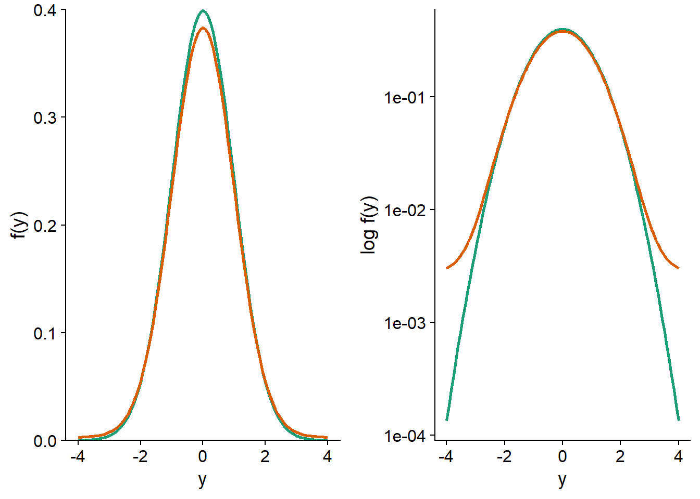
Let us now compare the standard errors for the mean and median of these distributions. To do so, we simulate 1000 samples of 100 observations from each of the two distributions; for the mixture distribution, the standard deviation is 1 for the first 95 observations and 5 for the last 5.
set.seed(82)
norm_samp <- replicate(1000, rnorm(100)) # par défaut, mean = 0, sd = 1
mix_samp <- replicate(1000, rnorm(100, mean = 0, sd = c(rep(1, 95), rep(5, 5))))For the normal distribution, the standard error of the simulated mean is about 0.10, as predicted by the formula \(\sigma / \sqrt{n} = 1 / \sqrt{100}\). For the mixture distribution, the standard error is about 50% higher (0.15).
sd(apply(norm_samp, 2, mean))## [1] 0.1012396sd(apply(mix_samp, 2, mean))## [1] 0.1524184As for the median, its standard error is higher than that of the mean for the normal distribution, but being less sensitive (more robust) to extreme values, it is estimated more precisely for the mixture distribution.
sd(apply(norm_samp, 2, median))## [1] 0.122032sd(apply(mix_samp, 2, median))## [1] 0.1311463What do these results mean? Suppose we compare two groups in which the mean and median of a response variable differ; if the distribution of the variable is symmetrical, then the mean is the same as the median for each group. If the variable follows a normal distribution, it is easier to detect a difference between the means than between the medians; a test based on the means, such as the \(t\)-test, has greater power. In the presence of extreme values, the standard error of the mean increases and a test based on the difference between medians may be more powerful.
M-estimators, which we will see later in a regression context, are measures of central tendency that make a trade-off between the efficiency of the mean for a normal distribution and the robustness to extreme values of the median. When the distribution is normal, the precision of these estimators approaches that of the mean, but they have a higher breakdown point and can therefore retain more of their precision in the presence of several extreme values.
Extreme values and regression
In a simple linear regression, the mean of the response \(y\) corresponds to a linear function of the predictor \(x\), whereas the random variation around this mean is represented by a residual \(\epsilon\) that follows a normal distribution.
\[y = \beta_0 + \beta_1 x + \epsilon\]
\[\epsilon \sim N(0, \sigma)\]
Note: The concepts presented here apply equally well to multiple linear regression, but the case of a single predictor is easier to illustrate.
The coefficients \(\beta_0\) and \(\beta_1\) are estimated by the method of least squares, i.e. the aim is to minimize the sum of the squared residuals for the \(n\) observations:
\[\sum_{i=1}^n \hat{\epsilon_i}^2 = \sum_i^n \left( y_i - \hat{\beta_0} - \hat{\beta_1} x \right)^2\]
Here \(\hat{\epsilon_i}\) is the estimated value of the residual \(i\) based on the estimated value of the coefficients.
For a linear regression, the influence of an observation on the estimated coefficients depends on two factors: the size of the residual of this observation, \(\hat{\epsilon_i}\), and the position of \(x_i\). For the same \(x_i\), the more extreme residuals \(\hat{\epsilon_i}\) have a greater influence; for the same residual size, those corresponding to a more extreme \(x_i\) value also have a greater influence, as shown in the graph below.
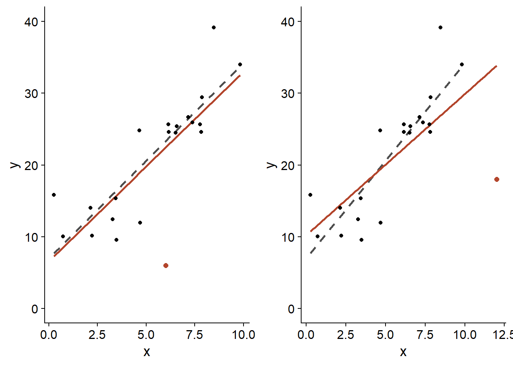
In both cases, the orange dot has the same residual, i.e. \(\epsilon = -20\). However, the one placed near the upper limit of \(x\) (right panel) has a greater effect on the estimated slope \(\hat{\beta_1}\) (orange line: with this point; dotted gray line: without this point).
The residuals near the extremes of \(x\) exert a large leverage on the regression line. Since the regression line always passes through the “center of gravity” of the scatterplot, \((\bar{x}, \bar{y})\), a residual farther from the center causes the line to “pivot” more in its direction.
Cook’s distance measures the influence of a point on the estimates of the regression model; it takes into account both the magnitude of \(\hat{\epsilon_i}\) and its leverage as a function of the position in \(x\). Generally, a Cook’s distance greater than 1 indicates an observation with a large influence.
Example
The Animals2 dataset included with the robustbase package contains measurements of body mass (body, in kg) and brain mass (brain, in g) for 65 animal species.
library(robustbase)
data(Animals2)
str(Animals2)## 'data.frame': 65 obs. of 2 variables:
## $ body : num 1.35 465 36.33 27.66 1.04 ...
## $ brain: num 8.1 423 119.5 115 5.5 ...The allometric relationship between these two quantities is visible on a log-log plot.
ggplot(Animals2, aes(x = body, y = brain)) +
geom_point() +
scale_x_log10() +
scale_y_log10()
All the animals in this dataset are mammals, except for three that are dinosaurs. These are the three observations with the largest body mass, but for which the brain mass is below the general trend.
In a statistical analysis, such outliers can be excluded if we have independent information indicating that the measurements are incorrect, or that they come from a different population from the rest of the observations. Since it is reasonable to believe that the allometric relationship differs between mammals and dinosaurs, it would be justified to exclude the latter before performing the regression. For the purpose of this class, we will assume that there is no reason a priori to exclude these values.
A linear regression based on the dataset gives a slope of 0.59 for log(brain) versus log(body).
lm_ani <- lm(log(brain) ~ log(body), Animals2)
summary(lm_ani)##
## Call:
## lm(formula = log(brain) ~ log(body), data = Animals2)
##
## Residuals:
## Min 1Q Median 3Q Max
## -3.8592 -0.5075 0.1550 0.6410 2.5724
##
## Coefficients:
## Estimate Std. Error t value Pr(>|t|)
## (Intercept) 2.17169 0.16203 13.40 <2e-16 ***
## log(body) 0.59152 0.04117 14.37 <2e-16 ***
## ---
## Signif. codes: 0 '***' 0.001 '**' 0.01 '*' 0.05 '.' 0.1 ' ' 1
##
## Residual standard error: 1.172 on 63 degrees of freedom
## Multiple R-squared: 0.7662, Adjusted R-squared: 0.7625
## F-statistic: 206.4 on 1 and 63 DF, p-value: < 2.2e-16In the diagnostic graphs of a regression, R automatically shows the row numbers or names of the rows corresponding to the extreme values. In this case, each row in the dataset is identified by the name of the animal.
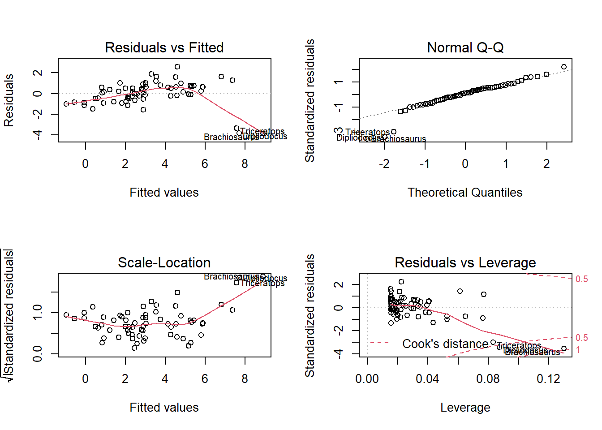
The 4th graph, Residuals vs. Leverage, allows us to identify the points with a strong influence. The dotted lines mark the thresholds of 0.5 and 1 for Cook’s distance. Here, none of the three extreme points exceeds 1, but their influence is much greater than that of the rest of the points.
In comparison, the regression ignoring the three extreme points gives a slope of 0.75.
summary(lm(log(brain) ~ log(body), Animals2[-c(6,16,26),]))##
## Call:
## lm(formula = log(brain) ~ log(body), data = Animals2[-c(6, 16,
## 26), ])
##
## Residuals:
## Min 1Q Median 3Q Max
## -1.71550 -0.49228 -0.06162 0.43597 1.94829
##
## Coefficients:
## Estimate Std. Error t value Pr(>|t|)
## (Intercept) 2.13479 0.09604 22.23 <2e-16 ***
## log(body) 0.75169 0.02846 26.41 <2e-16 ***
## ---
## Signif. codes: 0 '***' 0.001 '**' 0.01 '*' 0.05 '.' 0.1 ' ' 1
##
## Residual standard error: 0.6943 on 60 degrees of freedom
## Multiple R-squared: 0.9208, Adjusted R-squared: 0.9195
## F-statistic: 697.4 on 1 and 60 DF, p-value: < 2.2e-16The result of the two regressions is shown in the following graph (orange curve: with dinosaurs, grey dotted curve: without dinosaurs, shaded region: confidence interval).
ggplot(Animals2, aes(x = body, y = brain)) +
geom_smooth(data = Animals2[-c(6,16,26),], method = "lm",
alpha = 0.1, color = "grey30", linetype = "dashed") +
geom_smooth(method = "lm", color = "#b3452c", fill = "#b3452c") +
geom_point() +
geom_point(data = Animals2[c(6,16,26),], color = "#b3452c", size = 2) +
scale_x_log10() +
scale_y_log10()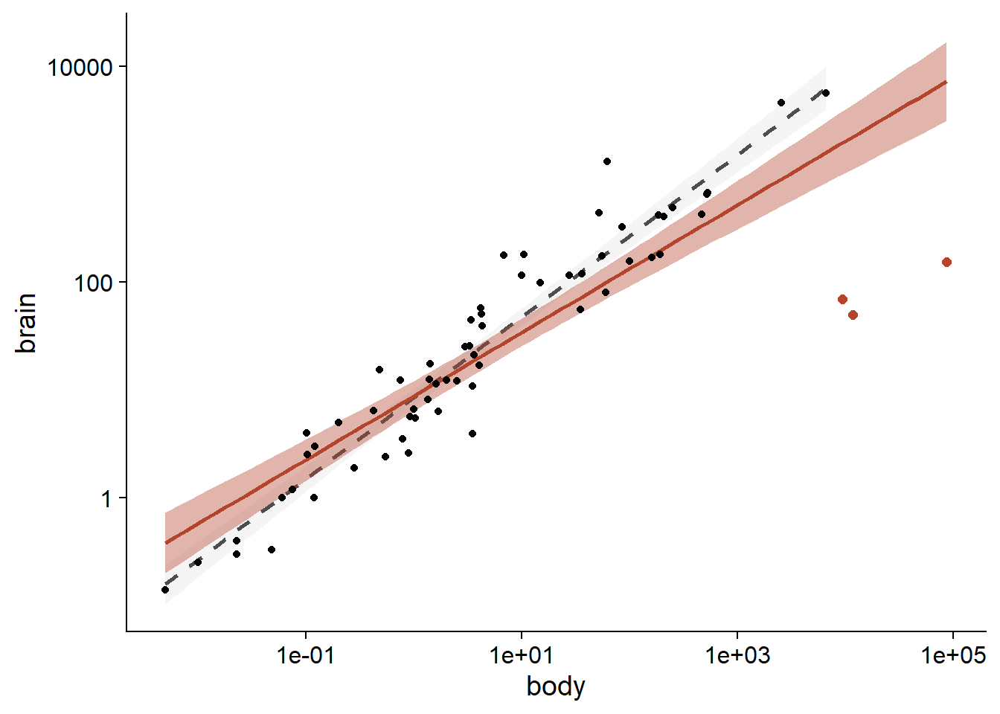
In the following sections, we will see how to reduce the influence of extreme values without excluding them completely from the analysis.
Robust regression with M-estimators
M-estimators are measures of central tendency designed for two purposes:
To provide better robustness to extreme values than the mean: higher breakdown point and lower standard error in the presence of extreme values.
To have a standard error that approaches that of the mean when the distribution is normal.
Since a regression model aims to estimate the mean of a response variable as a function of predictors, M-estimators can be applied to this type of model.
In regression, an M-estimator is calculated by assigning weights to each residual when applying the least squares method, in order to reduce the weight of the more extreme residuals.
In the weighted least squares method, each observation has a weight \(w_i\) and we want to minimize:
\[\sum_{i=1}^n w_i^2 \hat{\epsilon_i}^2\]
If all weights are equal, this method is equivalent to the ordinary least squares method.
One of the first M-estimators proposed was Huber’s, which corresponds to the weights \(w_i = 1\) if \(\vert \hat{\epsilon_i} \vert \le k\) and \(w_i = k/\vert \hat{\epsilon_i} \vert\) if \(\vert \hat{\epsilon_i} \vert > k\). With this method, all residuals less than \(-k\) or greater than \(k\) count as residuals equal to \(-k\) or \(k\), respectively, for the calculation of the regression coefficients.
Tukey’s biweight is another M-estimator, which corresponds to the weights \(w_i = (1 - (\hat{\epsilon_i}/k)^2)^2\) if \(\vert \hat{\epsilon_i} \vert \le k\) and \(w_i = 0\) if \(\vert \hat{\epsilon_i} \vert > k\). This estimator therefore gives a weight of less than 1 to all residuals; this weight decreases with the magnitude of the residual to reach 0 if the residual is less than \(-k\) or greater than \(k\), which is equivalent to completely excluding residuals of this magnitude.
The most commonly used values of \(k\) are \(k = 1.345\hat{\sigma}\) for Huber’s method and \(k = 4.685\hat{\sigma}\) for Tukey’s biweight; the resulting weights are shown in the graph below. Here, \(\hat{\sigma}\) is a robust estimate of the standard deviation of the data, which we will not discuss in this course. These \(k\) values are chosen so that the standard error of the estimates is at most 5% above that obtained by the classical model if the distribution of residuals is normal.
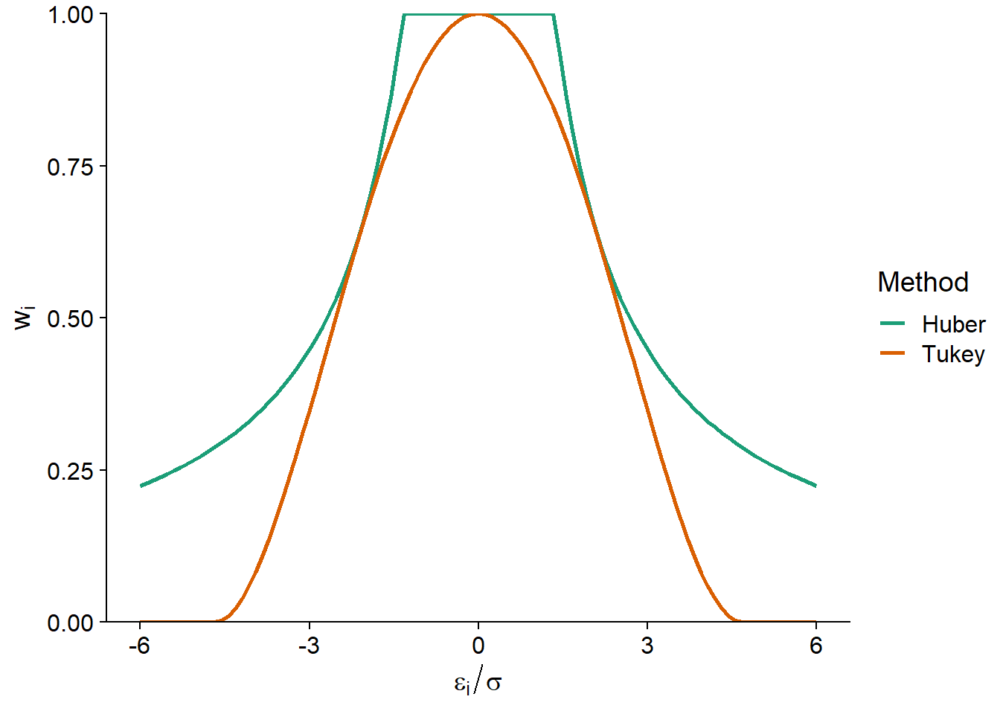
To estimate the coefficients of a robust regression with M-estimators, we must minimize the sum of weighted squared residuals, with weights that depend on the residuals themselves. In order to solve this problem, the algorithm used proceeds by iteration (iterative reweighted least squares or IRLS):
We start with a first proposed value for each coefficient, then we calculate the residuals and the weights.
The coefficients are re-estimated by minimizing the sum of the squares of the weighted residuals, then the value of the residuals and weights are revised according to these new coefficients.
The previous step is repeated until the weights remain approximately the same (within a specified margin) from one iteration to the next.
Of the two methods mentioned, Tukey’s biweight is more tolerant of extreme values with high leverage. However, its result may depend on the initial values proposed by the algorithm. The “MM” estimation method is a variation of the M-estimator that uses another robust technique to provide initial values for the M-estimator with Tukey’s biweight. The robust linear regression function lmrob of the robustbase package uses the MM method as the default choice.
Here is the result of lmrob applied to the Animals2 dataset seen above. The first part of the results summary looks like the table obtained with lm (estimated coefficients, standard error and significance test). Next, we get a summary of the calculated weights, and then the list of the algorithm parameters.
lmrob_ani <- lmrob(log(brain) ~ log(body), Animals2)
summary(lmrob_ani)##
## Call:
## lmrob(formula = log(brain) ~ log(body), data = Animals2)
## \--> method = "MM"
## Residuals:
## Min 1Q Median 3Q Max
## -5.56235 -0.52597 -0.04378 0.46510 1.98894
##
## Coefficients:
## Estimate Std. Error t value Pr(>|t|)
## (Intercept) 2.11749 0.09146 23.15 <2e-16 ***
## log(body) 0.74603 0.02065 36.12 <2e-16 ***
## ---
## Signif. codes: 0 '***' 0.001 '**' 0.01 '*' 0.05 '.' 0.1 ' ' 1
##
## Robust residual standard error: 0.721
## Multiple R-squared: 0.9229, Adjusted R-squared: 0.9217
## Convergence in 8 IRWLS iterations
##
## Robustness weights:
## 3 observations c(6,16,26) are outliers with |weight| = 0 ( < 0.0015);
## 10 weights are ~= 1. The remaining 52 ones are summarized as
## Min. 1st Qu. Median Mean 3rd Qu. Max.
## 0.4269 0.8956 0.9512 0.9092 0.9829 0.9986
## Algorithmic parameters:
## tuning.chi bb tuning.psi refine.tol
## 1.548e+00 5.000e-01 4.685e+00 1.000e-07
## rel.tol scale.tol solve.tol eps.outlier
## 1.000e-07 1.000e-10 1.000e-07 1.538e-03
## eps.x warn.limit.reject warn.limit.meanrw
## 2.069e-11 5.000e-01 5.000e-01
## nResample max.it best.r.s k.fast.s k.max
## 500 50 2 1 200
## maxit.scale trace.lev mts compute.rd fast.s.large.n
## 200 0 1000 0 2000
## psi subsampling cov
## "bisquare" "nonsingular" ".vcov.avar1"
## compute.outlier.stats
## "SM"
## seed : int(0)The weights function extracts the weights associated with each observation.
ggplot(data = NULL, aes(x = rownames(Animals2),
y = weights(lmrob_ani, type = "robustness"))) +
geom_point() +
coord_flip() + # inverse la position des axes x et y
theme_bw()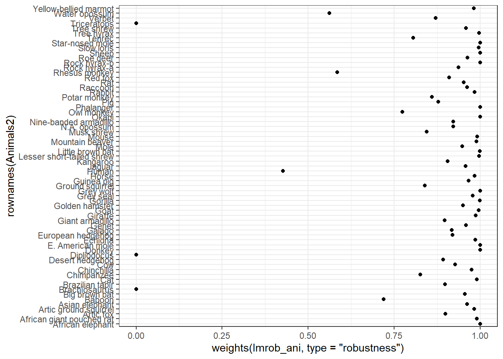
Note that the three dinosaur species were given a weight of zero, with the result that the regression line is about the same as the one obtained with lm excluding these three species.
ggplot(Animals2, aes(x = body, y = brain)) +
geom_smooth(data = Animals2[-c(6,16,26),], method = "lm",
alpha = 0.1, color = "grey30", linetype = "dashed") +
geom_smooth(method = "lmrob", color = "#b3452c", fill = "#b3452c") +
geom_point() +
geom_point(data = Animals2[c(6,16,26),], color = "#b3452c", size = 2) +
scale_x_log10() +
scale_y_log10()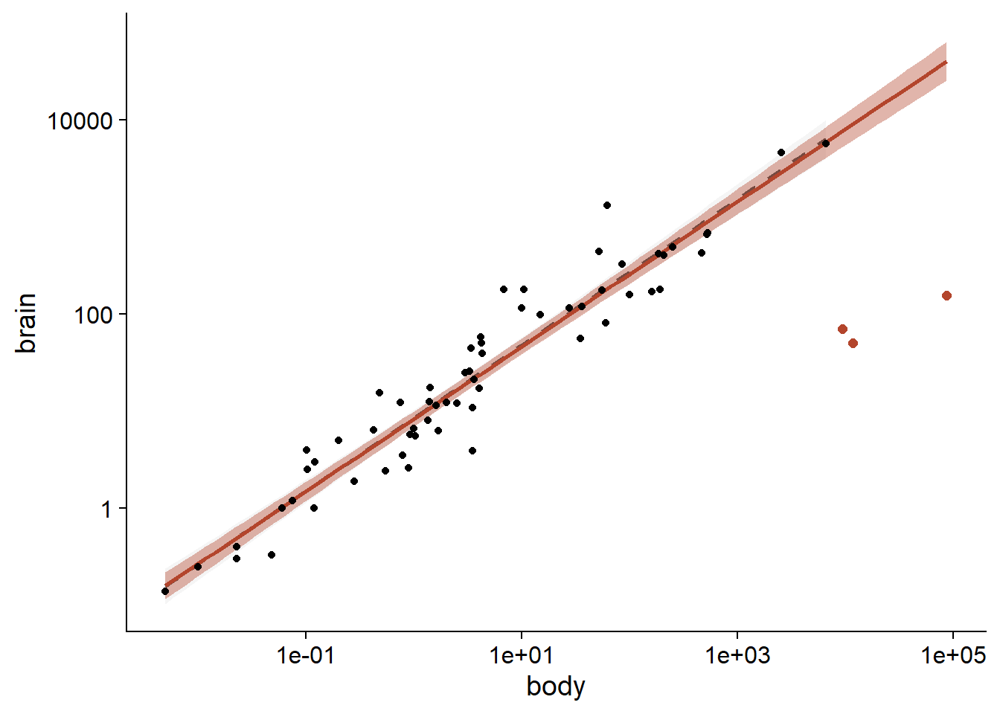
Extension to generalized linear models
The robustbase package also contains a glmrob function. This function applies various M-estimator-like methods to produce robust estimates of the coefficients of generalized linear models (GLM).
\(t\) regression
The methods presented in the previous section are not based on a specific shape of the distribution of residuals around the expected value of \(y\), which contributes to their generality.
However, some modeling approaches, such as maximum likelihood estimation as seen in the previous class and the Bayesian methods presented later this semester, require that a distribution be specified for all the random variables in the model. In this case, if we wish to assign to a variable a distribution that is similar to the normal, but allows more extreme values, we can use the \(t\) distribution.
Reminder: In statistics courses, Student’s \(t\) distribution is first presented as a way to estimate the distribution of the mean of a sample \(\bar{x}\) when the variance of the population is unknown. For a sample of \(n\) observations, if \(\sqrt{n}(\bar{x} - \mu)/\sigma\) follows a standard normal distribution and \(\sigma\) is replaced by its estimate \(s\) from the sample, then \(\sqrt{n}(\bar{x} - \mu)/s\) follows a \(t\) distribution with \(n-1\) degrees of freedom.
Even for the same variance, the \(t\) distribution contains more extreme values than the normal distribution. This effect is more pronounced when the number of degrees of freedom is small: if \(df = 2\), there are so many extreme values that the variance cannot be defined. In contrast, the \(t\) distribution approaches a normal distribution as the number of degrees of freedom becomes large.
For example, here is a graph of the \(t\) distributions with 3 and 6 degrees of freedom, compared to a standard normal distribution. On the logarithmic scale, we see that the residuals at \(\pm 4\) are about 100 times more likely for the \(t\) distribution with 3 degrees of freedom than for the normal distribution.
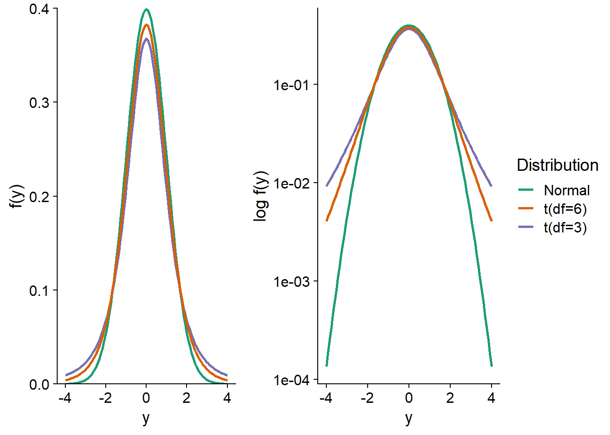
More generally, the \(t\) distribution can be used to model the residual variation in any model where we expect more extreme values than the normal distribution.
The tlm function in the hett package fits a linear regression model:
\[y = \beta_0 + \beta_1 x + ... + \epsilon\]
where the residuals, scaled by a parameter \(\sigma\), follow a \(t\) distribution with \(\nu\) degrees of freedom.
\[\epsilon/\sigma \sim t(\nu)\]
Note that here \(\sigma\) is not equal to the standard deviation of the residuals, because the variance of the \(t\) distribution is larger than that of a standard normal distribution.
Applying this model to the Animals2 dataset, we obtain regression coefficients that are comparable (taking into account the margin of error) to those obtained in the previous section with lmrob. These results can be found in the Location model section of the tlm summary.
library(hett)
treg <- tlm(log(brain) ~ log(body), data = Animals2,
estDof = TRUE)
summary(treg)## Location model :
##
## Call:
## tlm(lform = log(brain) ~ log(body), data = Animals2, estDof = TRUE)
##
## Residuals:
## Min 1Q Median 3Q Max
## -5.415e+00 -5.039e-01 -8.369e-07 5.181e-01 2.067e+00
##
## Coefficients:
## Estimate Std. Error t value Pr(>|t|)
## (Intercept) 2.07829 0.09628 21.59 <2e-16 ***
## log(body) 0.73653 0.02447 30.11 <2e-16 ***
## ---
## Signif. codes: 0 '***' 0.001 '**' 0.01 '*' 0.05 '.' 0.1 ' ' 1
##
## (Scale parameter(s) as estimated below)
##
##
## Scale Model :
##
## Call:
## tlm(lform = log(brain) ~ log(body), data = Animals2, estDof = TRUE)
##
## Residuals:
## Min 1Q Median 3Q Max
## -2.4484 -1.9795 -0.1566 1.2246 4.9181
##
## Coefficients:
## Estimate Std. Error z value Pr(>|z|)
## (Intercept) -1.2244 0.2745 -4.461 8.17e-06 ***
## ---
## Signif. codes: 0 '***' 0.001 '**' 0.01 '*' 0.05 '.' 0.1 ' ' 1
##
## (Scale parameter taken to be 2 )
##
##
## Est. degrees of freedom parameter: 2.071194
## Standard error for d.o.f: 0.6678805
## No. of iterations of model : 8 in 0.02
## Heteroscedastic t Likelihood : -86.3654It is important to specify estDof = TRUE to estimate the number of degrees of freedom, rather than assuming a fixed value. However, this estimate is likely to be imprecise unless the dataset is very large. Here, the number of degrees of freedom is 2.08, with a standard error of 0.67.
The tlm function also allows \(\sigma\) to vary with the predictors, an option we do not use here. Note that the Intercept under Scale model is an estimate of \(\log \sigma^2\).
Quantile regression
At the beginning of the class, we presented the median as an example of a statistic that is robust to extreme values. By definition, the probability that a variable \(y\) is less than or equal to its median is 50%; the median is therefore a quantile with a cumulative probability of 0.5. Quantiles other than the median are also robust statistics, although their breakdown points are lower. For example, a quantile with a probability of 0.1 or 0.9 has a breakdown point corresponding to 10% of extreme values.
Rather than modeling the mean of a response variable as a function of predictors, quantile regression models one or more quantiles of the response as a function of the same predictors. It can therefore be a robust regression method if the mean is replaced by the median, but quantile regression has other uses:
- To model a response variable for which the variance is not homogeneous; in this case, the distance between the quantiles varies according to the value of the predictors. A well-known example of quantile regression is the growth curve of children that represents different quantiles of the height or weight distribution vs. the child’s age.

- To represent a case where a predictor influences the extremes of the distribution more than its center. As explained in the article by Cade and Noon (2003) cited in the references, this application is useful in the case of complex systems where the response is sometimes limited by measured factors and sometimes by other unmeasured factors. In this case, the predictor limits the “ceiling” of the response, but has less control over its “floor” if other factors are then limiting, as illustrated in the graph below.
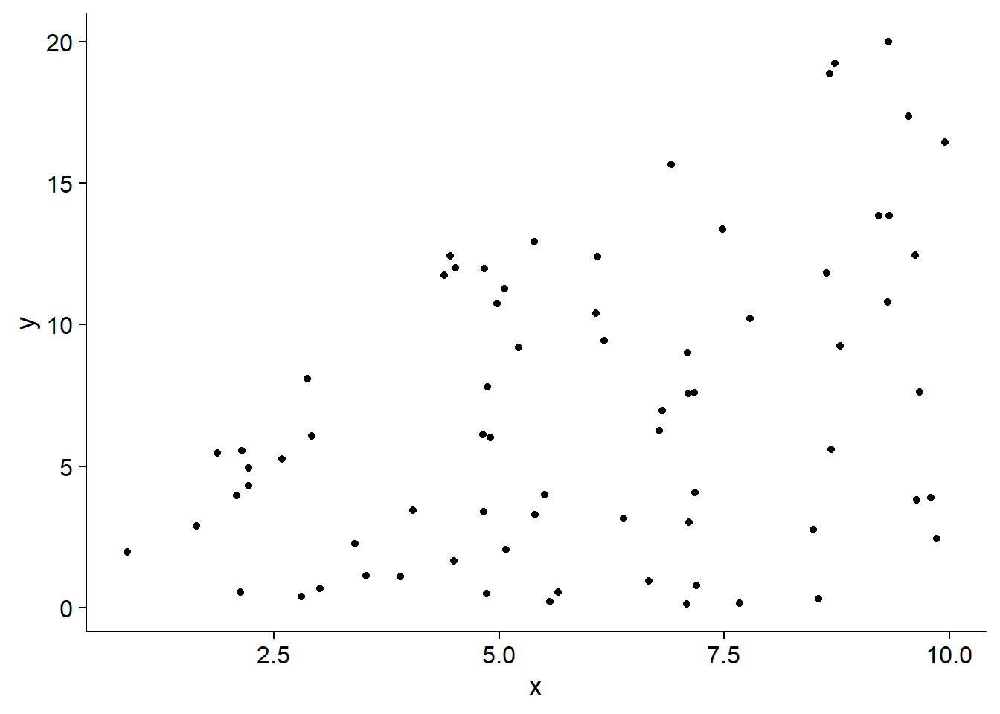
We will use the rq function of the quantreg package to perform a quantile regression.
The Mammals dataset included with that package shows the maximum known speed (in km/h) of mammals as a function of their weight. Since the weight scale varies over several orders of magnitude, it is more useful to take its logarithm.
library(quantreg)
data(Mammals)
ggplot(Mammals, aes(x = log(weight), y = speed)) +
geom_point()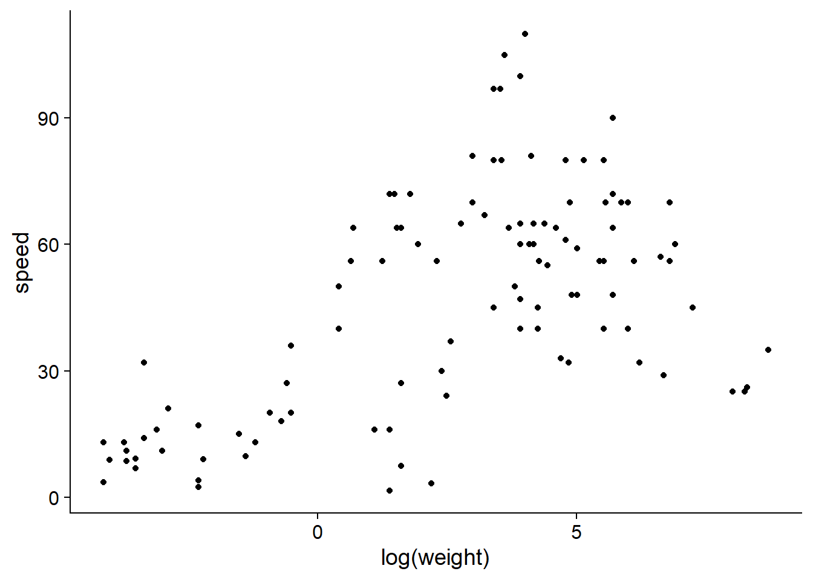
From this graph, it seems that weight may act as a limiting factor for mammalian speed, so its effect should be felt more on the high quantiles of the distribution.
To run a quantile regression with rq, the model formula and the source dataset data are specified as in a linear regression. Between these two arguments, we also need to specify in the tau argument which quantiles will be modeled. Here we will model the 1st and 9th deciles (0.1 and 0.9), the 1st and 3rd quartiles (0.25 and 0.75) and the median.
qreg <- rq(speed ~ log(weight), tau = c(0.10, 0.25, 0.5, 0.75, 0.9),
data = Mammals)The results summary presents the regression coefficients and their confidence intervals for each quantile.
summary(qreg)##
## Call: rq(formula = speed ~ log(weight), tau = c(0.1, 0.25, 0.5, 0.75,
## 0.9), data = Mammals)
##
## tau: [1] 0.1
##
## Coefficients:
## coefficients lower bd upper bd
## (Intercept) 13.30752 8.74691 14.56745
## log(weight) 2.34755 1.62337 3.26536
##
## Call: rq(formula = speed ~ log(weight), tau = c(0.1, 0.25, 0.5, 0.75,
## 0.9), data = Mammals)
##
## tau: [1] 0.25
##
## Coefficients:
## coefficients lower bd upper bd
## (Intercept) 20.81692 18.62656 23.71090
## log(weight) 3.84176 3.32131 5.06629
##
## Call: rq(formula = speed ~ log(weight), tau = c(0.1, 0.25, 0.5, 0.75,
## 0.9), data = Mammals)
##
## tau: [1] 0.5
##
## Coefficients:
## coefficients lower bd upper bd
## (Intercept) 31.19403 28.66333 33.18496
## log(weight) 5.54939 4.68512 5.95244
##
## Call: rq(formula = speed ~ log(weight), tau = c(0.1, 0.25, 0.5, 0.75,
## 0.9), data = Mammals)
##
## tau: [1] 0.75
##
## Coefficients:
## coefficients lower bd upper bd
## (Intercept) 41.69078 38.59558 59.42984
## log(weight) 6.93824 2.56935 7.93761
##
## Call: rq(formula = speed ~ log(weight), tau = c(0.1, 0.25, 0.5, 0.75,
## 0.9), data = Mammals)
##
## tau: [1] 0.9
##
## Coefficients:
## coefficients lower bd upper bd
## (Intercept) 55.82662 49.74724 83.80662
## log(weight) 7.10732 -3.05803 11.32294By applying the plot function to this summary, we can see the trend of each coefficient of the model as a function of the quantiles. For comparison, the coefficient estimates for the mean (linear model lm) are represented by a red line, with a dashed confidence interval.
plot(summary(qreg))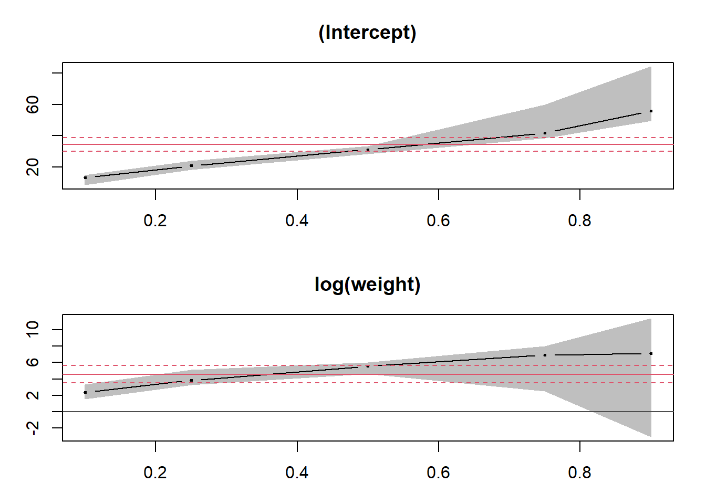
The predict function applied to the result produces a matrix, where each row corresponds to the corresponding row of the original data and each column represents the prediction of the quantiles of the response (in order) for a given row.
qpred <- predict(qreg)
head(qpred)## [,1] [,2] [,3] [,4] [,5]
## [1,] 33.73009 54.23840 79.47103 102.05010 117.65681
## [2,] 32.77824 52.68070 77.22095 99.23689 114.77505
## [3,] 32.10289 51.57549 75.62449 97.24088 112.73040
## [4,] 30.31373 48.64753 71.39507 91.95297 107.31363
## [5,] 27.37280 43.83471 64.44300 83.26100 98.40985
## [6,] 27.05933 43.32171 63.70199 82.33453 97.46080To quickly visualize the result of a quantile regression with one predictor, we can use the geom_quantile function of ggplot2.
ggplot(Mammals, aes(x = weight, y = speed)) +
geom_point() +
geom_quantile(quantiles = c(0.1, 0.25, 0.5, 0.75, 0.9), color = "#b3452c") +
scale_x_log10()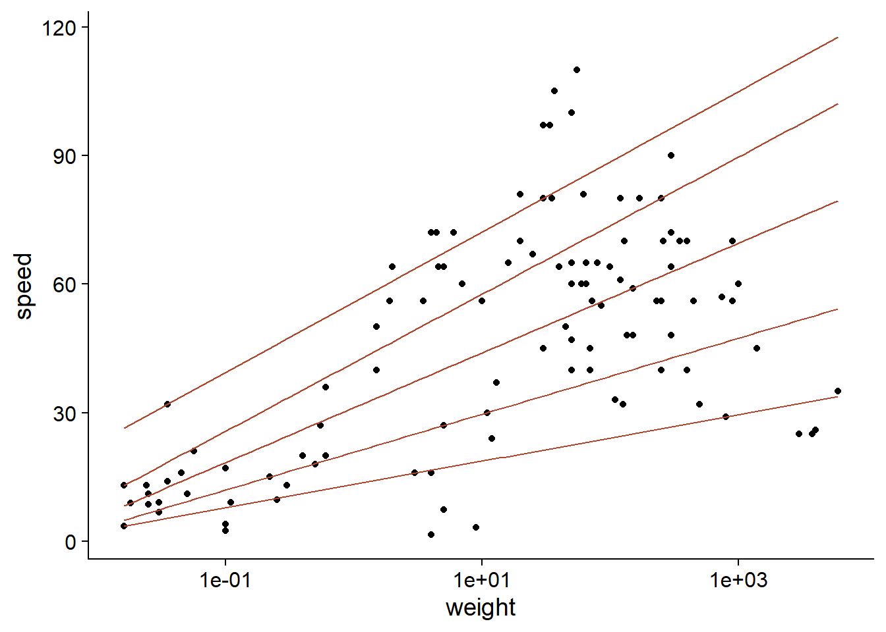
Summary
The mean and variance statistics are sensitive to extreme values.
For a linear regression, the influence of an observation increases if its residual is large (extreme value of \(y\)) or if it has high leverage (extreme value of \(x\)). Cook’s distance measures the combined effect of these two factors.
Robust regression based on M-estimators (the
lmrobfunction of the robustbase package) produces estimates that are almost as accurate as linear regression if the assumptions of the latter are respected, while being much less sensitive to the presence of a few extreme values.The \(t\) distribution provides a parametric method for representing a variable with more extreme values than the normal distribution. The
tlmfunction in the hett package fits a linear regression model where the response follows a \(t\) distribution rather than a normal distribution around its mean value.Quantile regression models the effect of a predictor on different quantiles of the distribution of the response.
References
Cade, B.S. and Noon, B.R. (2003) A gentle introduction to quantile regression for ecologists. Frontiers in Ecology and the Environment 1: 412–420.
Fox, J. (2002) Robust Regression. Appendix to An R and S-PLUS Companion to Applied Regression. Sage Publications, Thousands Oaks, USA.